- Name: Boutique Kids
- Version: 1.23.5
- Author: dtbaker
- Created: 2014-10-18
- Last Updated: 2016-09-12
- Tested With: WordPress 4.6
- Download: Click Here
- Online Demo: Click Here
Theme Installation
Please watch this instructional video showing how to install this WordPress theme and setup default content:
Below are the step by step instructions:
- Purchase the theme from ThemeForest.net
- After purchasing go to your Downloads page ( http://themeforest.net/downloads )
- Click on the Download button and choose the Installable WordPress file option and save this ZIP file to your desktop.
- Login to WordPress and go to Appearance > Themes > Install Themes
- Click the Upload tab
- Choose the downloaded ZIP file from your desktop and click upload
- Choose the ‘Activate’ option
- Follow the Setup Wizard prompts
- (if you need to run the setup wizard again please go to Appearance > Setup Wizard)
- Note: If you are prompted to install Widget Area Manager please follow the prompts. If for some reason this plugin does not install automatically please download it from here and install it like a normal plugin: click here. The Widget Area Manager is required for this theme to operate correctly. It will allow you to control the position of sidebars and what content to display in them.
Here is a screenshot showing step by step instructions for downloading and installing the WordPress theme:
{kind=link}
Child Theme Customizations
Sample Child Theme Available for download here: boutique-kids-child.zip
- We recommend installing this child theme incase you wish to make advanced changes to the theme and still would like to receive updates.
- If you are familiar with WordPress theme customisations and you are planning on modifying this theme for your project then we highly recommend creating a "Child Theme" that contains your customisations.
- This way when an update is released by us it will not overwrite any of your custom changes.
- If you do not plan on editing any of the theme files (eg: css files, php code, background images) then you do not need to create a Child Theme.
- You do not have to create a Child Theme, this is an non-required advanced step for those who have a moderate level of website editing skills.
- Up to date instructions for creating a Child Theme are available here: http://codex.wordpress.org/Child_Themes#How_to_Create_a_Child_Theme
Responsive Layout
This theme is enabled with responsive CSS layouts so that it displays nicely on mobile devices. If you wish to disable this responsive feature please go to Appearance > Customize > Page Layout
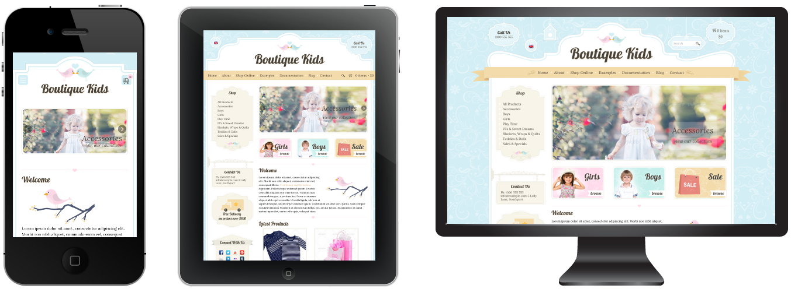
Customizing Theme Colors, Fonts and Other Options
Customization is done easily via the Appearance > Customize menu. Here you can change colors and font styles for the ensite website, and preview them before they go live.
Most of the settings are under the "Typography" menu.
Other changes can be performed in CSS files. Install the "Child Theme" (see above) and then edit the child theme style.css file. You can edit this file via FTP or via Appearance > Editor menu.
Advanced Customization: if you need assistance with advanced customizations then please hire someone from Envato Studio (look in the WordPress category)
Home Page Slider
Here are instructions on creating the slider (as seen on the home page of the demo).
- Create a new page in WordPress
- Click the “Add Media” button at the top
- Choose “Create Gallery” on the left
- Select (or upload) your gallery images (the ideal image size is 697px by 300px)
- Click the “Create New Gallery” button
- Change “Link To” as “Media File”
- Change “Image Size” to “Original Size”
- Change “Gallery Type” to “Flex Image Slider”
- Click on each gallery image and enter a “Title” and a “Caption” (these will display on the slider)
- Click the “Insert Gallery” button
- Save the page and view it to check it works.
This is how the slider will appear in the backend editor (so you can easily see all the photos and captions in one place) – click the Edit icon to edit the slider images (as above).
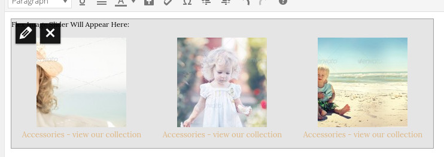
This is how the slider will appear in the front end published page:
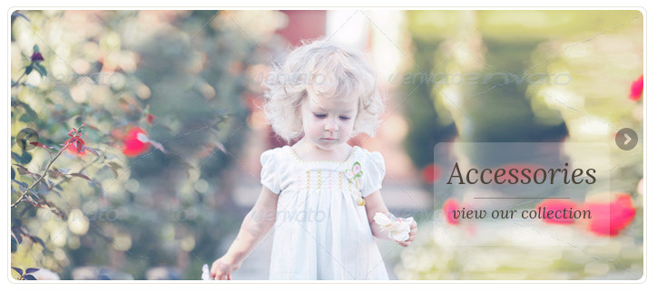
Advanced settings for the flexslider can be made by editing the flexslider/flexslider.css and the flexslider init options can be changed in the dtbaker.gallery.php file on about line 350:
<script type="text/javascript" charset="utf-8">
jQuery(window).load(function() {
jQuery('.flexslider').flexslider({
controlNav:false
});
});
</script>
Shortcodes
Shortcodes can be easily inserted with the "Insert" button on the WordPress text editor toolbar. There are a number of included shortcodes:
Fancy Banner:
Inserting the fancy banner is very easy. Simply click the “Banner” button on the editor toolbar and you get an easy to use popup that allows you to insert the shorcode.This is what the shortcode looks like on the front end published page: 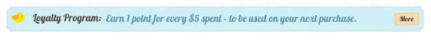
This is what it looks like in the editor:
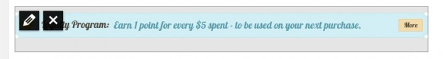
This is what happens when you click the edit button on the fancy banner (very easy to use!)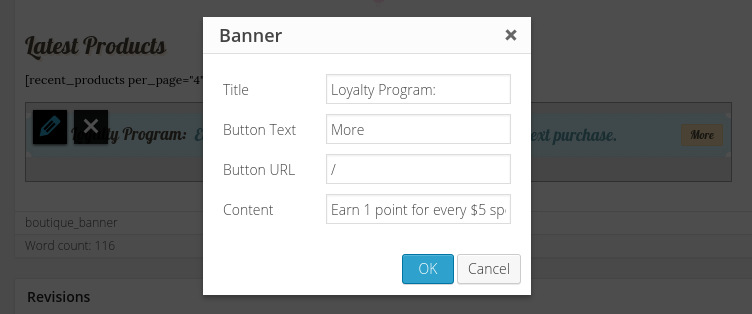
Line:
There are three types of fancy lines: hearts, birds and circle. To insert a line simply click the “Line” button within the editor (the “Circle” line has an option to insert a very short word such as “Sale” or “Map” to display ontop of the little circle).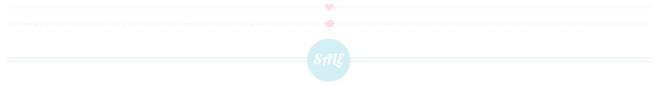Icon Boxes:
Icon boxes are available by clicking the “Icon” button on the editor toolbar.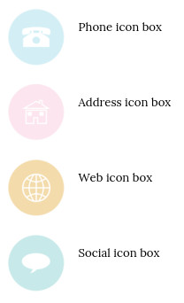Google Map:
Example of a map can be seen on the Contact Page demo. 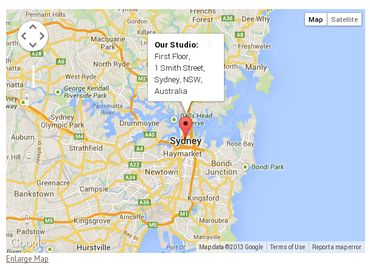Create a photo gallery or simple image slider
Here are instructions on creating the fancy gallery with 3 images (as seen on the home page of the demo).
- Create a new page in WordPress
- Click the “Add Media” button at the top
- Choose “Create Gallery” on the left
- Select (or upload) your gallery images (the ideal image size is 160px by 140px)
- Click the “Create New Gallery” button
- Change “Link To” as “Media File”
- Change “Image Size” to “Original Size”
- Change “Gallery Type” to “Styled Gallery Buttons”
- Click on each gallery image and enter a “Title” and a “Caption” (these will display on the fancy boxes)
- Click the “Insert Gallery” button
- Save the page and view it to check it works.
This is how the fancy gallery will appear in the backend editor (so you can easily see all the photos and captions in one place) – click the Edit icon to edit the images (as above).
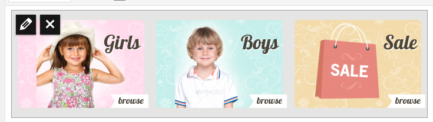This is how the fancy gallery will appear in the backend editor (so you can easily see all the photos and captions in one place) – click the Edit icon to edit the images (as above).
An example of available galleries is here: http://boutique-kids.dtbaker.net/examples/gallery/
Setup the Contact Page
(not required if you have setup default content as above)
- Make sure the Contact Form 7 plugin is installed
- Login as admin and choose "Contacts" menu on the left.
- Open the default "Contact Form 1" and make any changes as neccessary.
- Copy the shortcode (it will look something like [[contact-form-7 title="Contact form 1″]] )
- Create a new page called "Contact", type the words "Please fill in the form below to contact us" and paste in the shortcode from before.
- Save the page and check the contact form works (ie: do you receive an email from it?)
- Click edit page again and add a map using the google map shortcode (more details below under shortcode)
Setup the Main Menu
(not required if you have setup default content as above)
Go to Appearance > Menu and follow the
standard WordPress menu creation process.
Detailed instructions on creating a menu are located on the WordPress
website here: http://codex.wordpress.org/WordPress_Menu_User_Guide
Installing the online shop (WooCommerce)
- If you wish to sell products please install WooCommerce (this should happen during the installation wizard)
- Go to WooCommerce > Settings and configure your preferences
- Further details about installing and using WooCommerce are available here:
http://docs.woothemes.com/document/woocommerce/
- Further help and support for using WooCommerce is available here:
http://www.woothemes.com/woocommerce/
Background Images / Colors
Note: some graphical elements have been designed to only work with the default background image. So a change of background image may cause some inside design elements to not look nice. Additional graphical modifications may need to be made after changing the default background.
- If you wish to change the default background image:
- Go to Appearance > Background
- Go to "Choose an Image from your Computer" and choose the background image you would like to use.
- Adjust the colors and background settings to suit your needs.
Insert Styled Image
This theme comes with a really cool and unique styled image selector. When inserting an image to a page/post you have the option to choose the image style. See this video for an example:
Columns
Adding columns to your page is very easy. Simply edit the page/post and click the "Columns" button. See this video for an example:
Columns can also be styled, choose the style from the drop down list.
Included Widgets
- Opening Hours Widget:
Useful for placing on the Contact Us page.
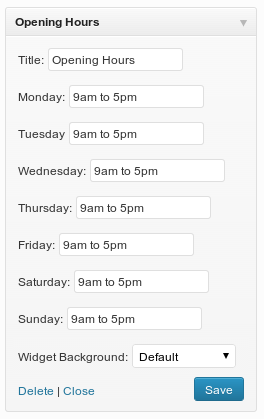 - Social Icons Widget:
Here are the social icons included within this widget:
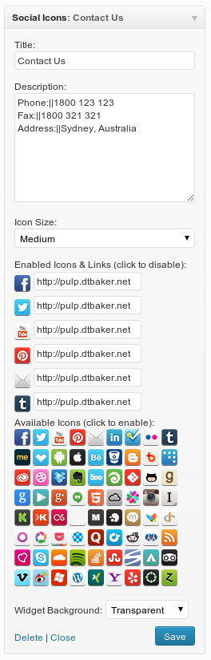 - Google Map:
Useful for the contact page or the footer widget area.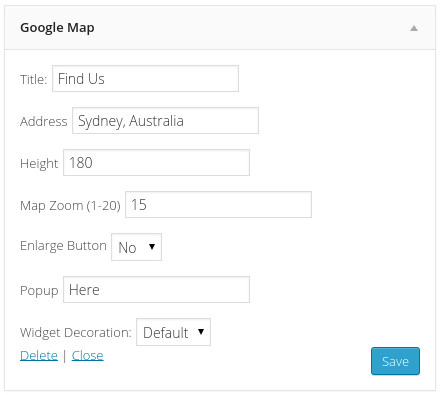
{kind=link}
Widget Decorations
You can change the background color of any Widget within this theme using the easy drop down menu in Appearance > Widgets.
Hint: use the “default” background option for footer widgets.
There are 5 widget background options, as seen here:
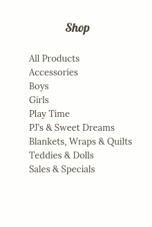Here are the settings used in the main widget sidebar area (as seen in the demo). Thsese should be loaded in by default if the default content instructions above are followed:
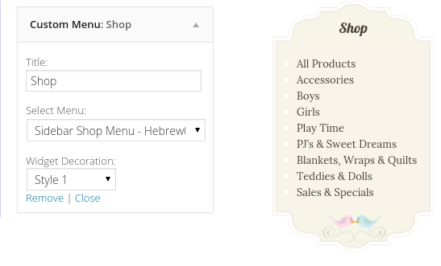 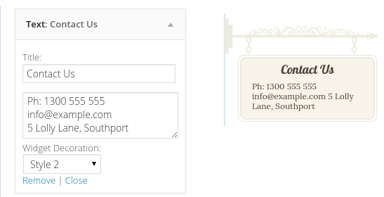 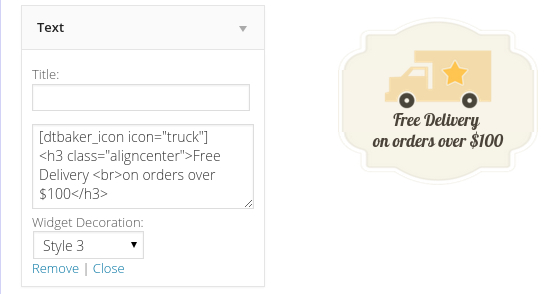 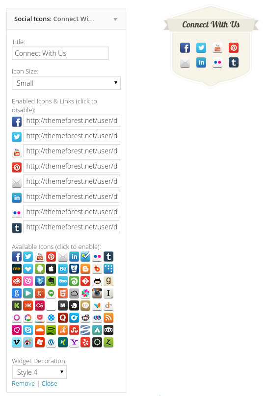 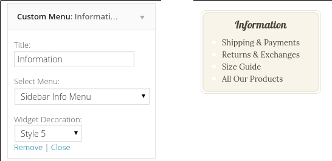
Header Options
Under Appearance > Customize > Page Layout > “Page Header Mode” there are three options to control the page header styles.
- Underline (default) displays the headers like this:
- Fancy Border displays the headers like this:
(you can change the background color from “Other Colors” > “Background Fancy Header”, such as this:) - Plain displays the headers like this:
Widgets Positions / Sidebars
The Widgets and Sidebars in this theme are handled by the “Widget Area Manager” plugin.
To view all available widget areas (header/sidebar/footer) please see the demo.
Please note: the header widget area (5 drop down boxes) is very restricted, making any changes to this area to include different looking widgets will most likely require advanced css and website editing knowledge. It is only designed to contain the 5 drop down boxes as shown in the live demo.
You can change the position of some of the widget areas using the “Left/Right Column”, “Header” and “Footer” menu items displayed in the admin bar:

Changing these options does the following:
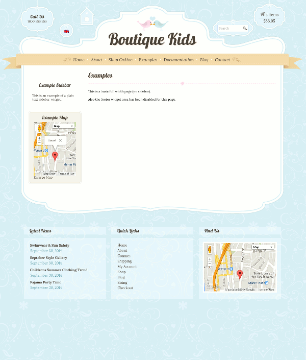
- Header Area:
You can turn the header widget area on by navigating to the page and selecting Header > Position > Visible. This will display the header widgets (5 drop down boxes) at the top of the page. - Left/Right Column:
This is set to display on the right hand side of every page by default. You can change this on a page by page basis, or change the default options for that particular page type (eg: you can make all ‘Posts’ display a sidebar on the left by default). - Footer Area:
This displays at the very bottom of the page.
Translations
The WordPress POT file for this theme is available in the /languages/ folder of the theme zip file.
Instructions on translating WordPress themes are available here: https://poedit.net/wordpress
WPML + RTL Support
This theme is compatible with WPML and RTL languages. Here is a screenshot of the WPML settings used when installing the plugin. For more details and support please head over to https://wpml.org/
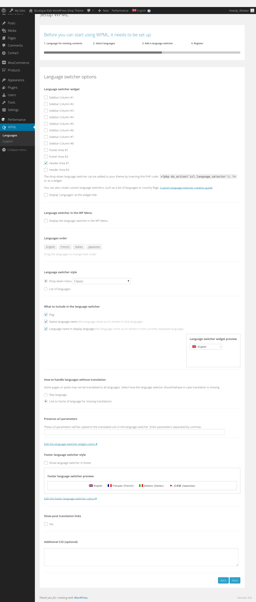
RTL Support, here is an example of the theme translated into Hebrew using the WPML plugin:
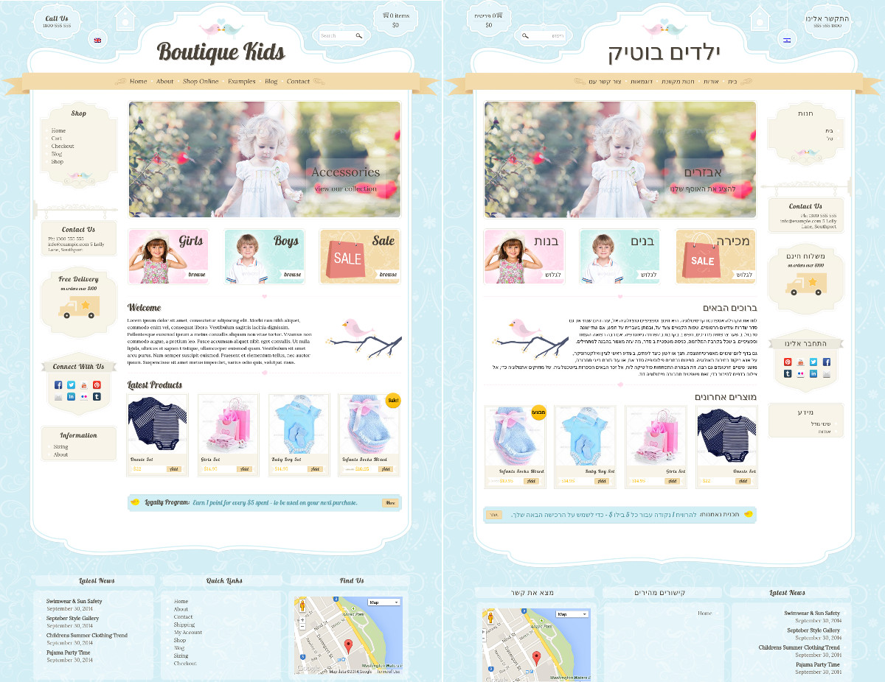
To get WooCommerce working with Multiple Languages or Currencies please install the free “WooCommerce Multilingual” plugin. Then go to WPML > WooCommerce and setup the currencies and conversion rates here:
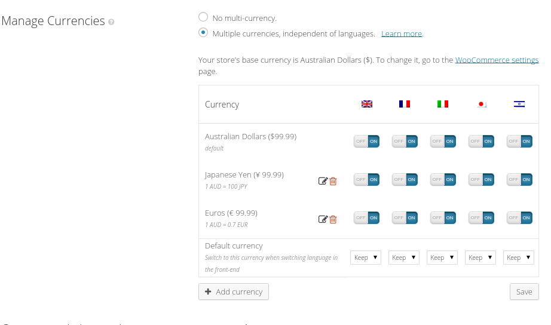
More details here: http://wpml.org/documentation/related-projects/woocommerce-multilingual/multi-currency-support-woocommerce/
Photoshop Files
Photoshop files are available from this special URL after purchasing this theme: http://dtbaker.net/files/envato/resources/. Please login with your Envato account to access the latest version of the purchased resources.Advanced Editing
Please consider using a Child Theme for any changes. This will help stop theme updates overwriting your customisations.
- Retina Graphics:
- All graphics are provided in two versions. A larger 2x version is in the images/2x/ folder. These graphics are used on devices with retina displays (such as iPad) in order to provide a crisper viewing experience.
- If you do edit any of the images/ please make sure to edit the corresponding larger image within the images/2x/ folder.
- CSS Files:
- A good way to override default theme CSS is to install a WordPress CSS plugin such as this one. This is a little easier than overwriting theme stylesheets for small changes.
- Here are the list of css files and a description of what they do:
- rtl.css – this controls RTL language styles (such as Hebrew) if you have an international audience.
- style.blog.css – the blog layout page and individual blog pages
- style.comments.css – the blog comments
- style.content.css – the inside content area. Images, text, boxes.
- style.custom.css – automatically generated, do not edit this file, see below dynamic stylesheet section for more details.
- style.css – overall page styles (sidebars, header, footer)
- style.editor.css – wordpress editor styles
- style.ie.css – old IE styles
- style.prettyPhoto.css – handles nice image popups in galleries
- style.responsive.css – tablet and mobile responsive css layout rules
- style.woocommerce.css – styles to override the default WooCommerce layout
- style.wpcf7.css – override the default contact form settings
- LESS Files:
- There are some LESS files in the less/ folder that were used to generate the CSS files. If you are familiar with LESS then please feel free to use these files for editing the main CSS files. Otherwise simply edit the main CSS files and ignore the LESS files all together.
- less/rtl.less – used to generate rtl.css
- less/style.content.less – used to generate style.content.css
- less/style.less – used to generate style.css
- less/style.responsive.less – used to generate style.responsive.css
- less/style.woocommerce.less – used to generate style.woocommerce.css
- Dynamic stylesheet: style.custom.css
This stylesheet is created and overwritten every time you click save in the theme “Customize” area
The file style.custom.php is used to generate the style.custom.css file, so feel free to modify the style.custom.php file if you need to change any of the automatically generated css rules.
The file dtbaker.theme_options.php contains some of the default custom styles listed at the top. This file also controls the wordpress customizer options if you need to make changes there. - Comments: the comment layout is controlled from functions.php under the function boutique_comment() – this can be overridden with a child theme
- 3 color boxes on home page, change image width:
change the 70% in style.content.css to suit your needs:.entry-content .gallery-dtbaker-pretty .gallery-icon img{ max-width: 70%; } - Header Hanging Boxes:
- The 5 boxes in the header are controlled by widgets in the “Header Area”. To change these go to Appearance > Widgets.
- To change the images used in the header boxes please edit the corresponding images, these are:
hanger1.png, hanger2.png, hanger3.png, hanger4.png, hanger5.png :


- Header Curved Lines:
- The header is built using 4 graphics positioned via CSS. These are: main-top-left.png, main-top-right.png, main-top-centre.png and main-top-tile.png:


- The header is built using 4 graphics positioned via CSS. These are: main-top-left.png, main-top-right.png, main-top-centre.png and main-top-tile.png:
- Menu Ribbon:
- The ribbon is built with 3 images: menu-ribbon-left.png, menu-ribbon-right.png, menu-ribbon-tile.png:


- The ribbon is built with 3 images: menu-ribbon-left.png, menu-ribbon-right.png, menu-ribbon-tile.png:
- If you would like to make an advanced change and cannot figure it out please send us an email. Although we are unable to perform any custom modifications for you we may be able to point you in the right direction. Changes outside of the “customize” area of this theme will require an advanced level of CSS, HTML and (possibly) PHP knowledge.
Resources
icons: https://www.gosquared.com/resources/165-vector-icons/
icons: http://garcya.us/135-free-vector-icons/
Swirls background: https://www.vectoropenstock.com/vectors/preview/68546/curly-swirl-decorative-ornament
Swirl detail: Nymphette Font: http://www.dafont.com/nymphette.font
Birds: drawn
Sales bag: drawn
ribbon: http://all-free-download.com/free-vector/vector-banner/banners_pattern_58680.html
Sign hanger: http://www.webdesignhot.com/free-vector-graphics/vintage-signboard-vector-set-1/
*Fonts:
Lobster: https://www.google.com/fonts/specimen/Lobster
Lora: https://www.google.com/fonts/specimen/Lora
photos:
girl: http://photodune.net/item/child-girl-wearing-white-hat/2772766
Boy: http://photodune.net/item/cute-preschool-boy/7996204
smiling woman – http://photodune.net/item/confident-woman-smiling/5679414
happy man – http://photodune.net/item/happy-young-man/7237088
woman curly hair – http://photodune.net/item/portrait-of-woman/418079
woman brown coat – http://photodune.net/item/woman/9012723
woman white shirt http://photodune.net/item/woman/1798785
girl dandilion – http://photodune.net/item/sunny-day/3789098
child – superhero – http://photodune.net/item/superhero-kid/5945789
toy plane – http://photodune.net/item/happy-kid-playing-with-toy-airplane/7090617
Changelog
Here is a list of theme changes:
-
Version: 1.23.5
Date: 2016-09-12
- Support for WordPress 4.6.1
- Elementor page builder support
- New menu and border color options
- New PSD documents
-
Version: 1.23.4
Date: 2016-08-15
- Google maps fix
-
Version: 1.23.3
Date: 2016-06-11
- Zoom CSS fix
-
Version: 1.23.2
Date: 2016-03-28
- Logo configuration options
-
Version: 1.23.1
Date: 2016-03-17
- Latest WordPress version fixes
- Default content improvements
-
Version: 1.22
Date: 2015-07-22
- WooCommerce template update and gallery fix
-
Version: 1.21
Date: 2015-07-05
- prettyPhoto fixes
-
Version: 1.20
Date: 2015-06-24
- WordPress 4.2.2 support and gallery fix
-
Version: 1.19
Date: 2015-05-24
- WordPress 4.2.2 support
-
Version: 1.18
Date: 2014-12-19
- updated social plugins
-
Version: 1.17
Date: 2014-12-05
- fix for child themes
-
Version: 1.16
Date: 2014-12-05
- fix for google fonts
-
Version: 1.15
Date: 2014-11-26
- woocommerce product column layout fix
-
Version: 1.14
Date: 2014-11-19
- footer css fix in widget area
-
Version: 1.13
Date: 2014-11-15
- view full site button added to mobile menu
-
Version: 1.12
Date: 2014-11-12
- esc_attr fixes
-
Version: 1.11
Date: 2014-11-03
- css fancy blog fix